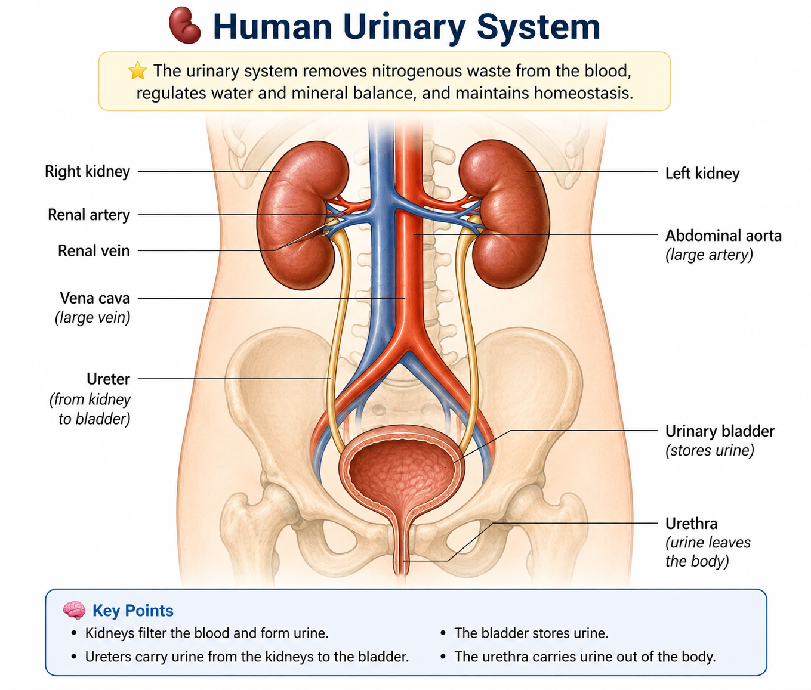
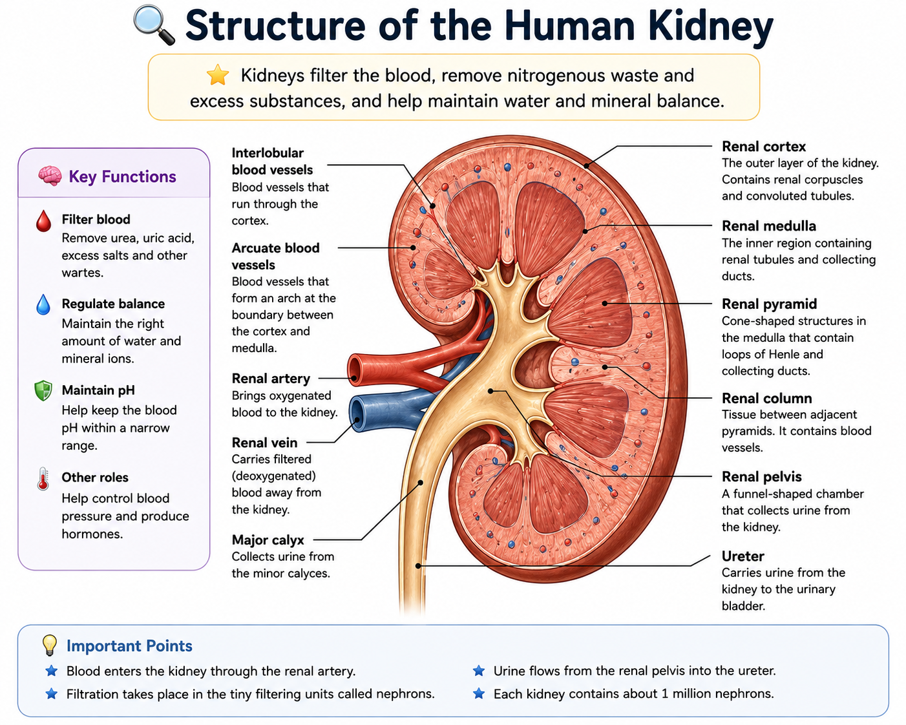
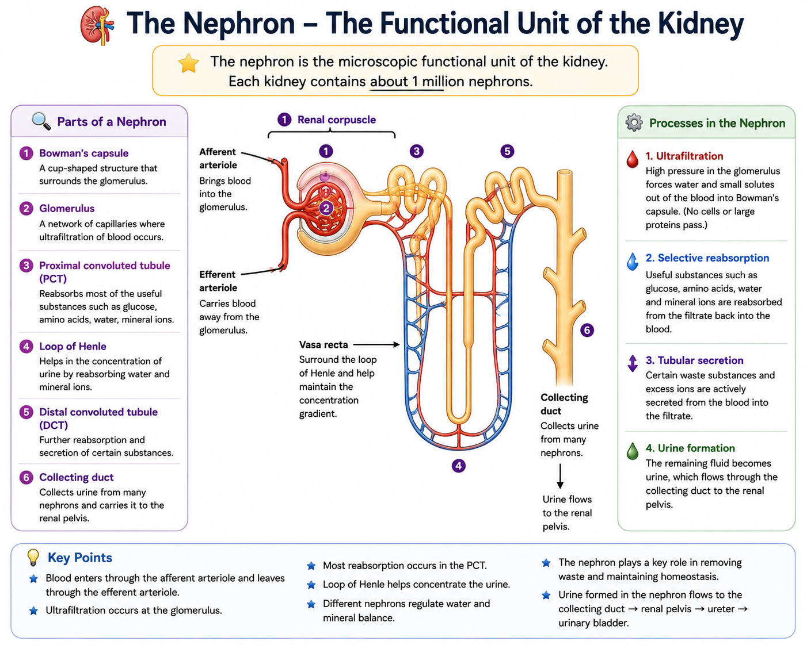

1. 💧 What is Excretion?
Excretion is the removal of toxic materials, waste products of metabolism and substances present in excess from the body.
🧠 Key Definition
Excretion: The removal from the body of toxic materials, the waste products of metabolism and substances in excess of requirements.
Excretion is important because the accumulation of metabolic waste can damage cells and interfere with normal body functions.
2. 🧪 Metabolic Waste Products
Metabolism involves chemical reactions that take place inside living cells. These reactions produce waste substances that must be removed.
| Waste Product | Where It Comes From | Main Excretory Organ |
|---|---|---|
| Carbon dioxide | Aerobic respiration | Lungs |
| Urea | Breakdown of excess amino acids | Kidneys |
| Excess water | Metabolism and excess intake | Kidneys, skin, lungs |
| Excess mineral ions | Diet and metabolism | Kidneys and skin |
3. 🫁 The Lungs as Excretory Organs
The lungs remove carbon dioxide and some water vapour from the body.
Carbon dioxide is produced during aerobic respiration in cells. It diffuses into the blood and is transported to the lungs.
In the lungs, carbon dioxide diffuses from the blood into the alveoli and is removed from the body during exhalation.
🎯 Exam Focus
If asked for an excretory product of respiration, the answer is carbon dioxide.
4. 🧪 The Liver and Excretion
The liver is an important organ involved in the removal of nitrogenous waste.
Excess amino acids cannot simply be stored in the body. In the liver, amino acids are broken down by a process called deamination.
The nitrogen-containing part is converted into ammonia. Ammonia is very toxic, so the liver converts it into the less toxic substance urea.
🔄 Important Sequence
Excess amino acids → deamination in liver → ammonia → urea → blood → kidneys → urine
5. 🧬 Deamination
Deamination is the removal of the amino group from excess amino acids.
The process occurs mainly in the liver.
⚠️ Remember
- Excess amino acids cannot be stored like glucose.
- The liver breaks down excess amino acids.
- Ammonia is produced.
- Ammonia is converted to urea.
- Urea is carried in the blood to the kidneys.
6. 🧪 Urea
Urea is a nitrogenous waste product formed in the liver from the breakdown of excess amino acids.
Urea is transported in the blood to the kidneys, where it is removed from the blood and eventually leaves the body in urine.
7. 🫘 The Kidneys
The kidneys are the major organs responsible for removing urea and controlling the amount of water and mineral ions in the body.
🧠 Main Functions of the Kidneys
- Remove urea from the blood.
- Remove excess water.
- Remove excess mineral ions.
- Help maintain the water balance of the body.
- Help maintain the correct concentration of mineral ions.
8. 🫘 Human Urinary System
The urinary system consists mainly of the kidneys, ureters, urinary bladder and urethra.

9. 🧩 Parts of the Urinary System
| Part | Function |
|---|---|
| Kidneys | Filter the blood and form urine. |
| Ureters | Carry urine from the kidneys to the bladder. |
| Urinary bladder | Stores urine temporarily. |
| Urethra | Carries urine from the bladder out of the body. |
10. 🩸 Blood Supply to the Kidney
Blood enters each kidney through the renal artery.
The renal artery carries blood containing urea and other substances that need to be removed or regulated.
Blood leaves the kidney through the renal vein.
🔴 Remember
Renal artery: carries blood to the kidney.
Renal vein: carries blood away from the kidney.
11. 🔬 Structure of the Kidney
A kidney has several important regions involved in filtration and the formation of urine.

12. 🧩 Main Parts of the Kidney
| Part | What to Know |
|---|---|
| Renal cortex | Outer region of the kidney containing many parts of the nephrons. |
| Renal medulla | Inner region containing structures of the nephrons and collecting ducts. |
| Renal pelvis | Collects urine before it passes into the ureter. |
| Renal artery | Brings blood to the kidney. |
| Renal vein | Carries blood away from the kidney. |
| Ureter | Carries urine from the kidney to the bladder. |
13. 🧪 The Nephron
A nephron is the microscopic functional unit of the kidney. Each kidney contains a very large number of nephrons.
The nephron is responsible for filtering the blood and helping form urine.

14. 🔬 Parts of a Nephron
| Part | Function |
|---|---|
| Bowman's capsule | Collects the filtrate produced from the blood. |
| Glomerulus | Network of capillaries where ultrafiltration occurs. |
| Proximal convoluted tubule | Reabsorbs useful substances and much of the water. |
| Loop of Henle | Important in the regulation and concentration of urine. |
| Distal convoluted tubule | Further adjustment of water and mineral ion balance. |
| Collecting duct | Collects urine from nephrons and carries it towards the renal pelvis. |
15. 🩸 Ultrafiltration
Blood enters the glomerulus under relatively high pressure.
Small molecules and water are forced out of the blood through the capillary walls into Bowman's capsule.
This process is called ultrafiltration.
🔬 Substances That Enter the Filtrate
- Water
- Glucose
- Amino acids
- Mineral ions
- Urea
🚫 Substances Normally Kept in the Blood
- Blood cells
- Large plasma proteins
16. 🔄 Selective Reabsorption
After filtration, useful substances must be returned to the blood. This is called selective reabsorption.
Useful substances such as glucose, amino acids, some mineral ions and much of the water are reabsorbed from the filtrate into the blood.
🧠 Important Idea
The kidney does not simply remove everything from the blood. Useful substances are recovered by selective reabsorption.
17. 🍬 Glucose in the Kidney
Glucose is a useful substance and should normally not be lost in large amounts in the urine.
Glucose is filtered into the nephron but is normally reabsorbed back into the blood.
⚠️ Exam Point
In a healthy person, glucose is normally absent from urine because it is selectively reabsorbed.
18. 💧 Water Reabsorption
Water is filtered from the blood into the nephron, but the body cannot afford to lose all of it.
Much of the water is therefore reabsorbed into the blood.
The amount of water reabsorbed changes according to the body's water needs.
19. 🧂 Mineral Ion Regulation
Mineral ions such as sodium ions are essential for normal body functions. However, excessive amounts can be harmful.
The kidneys regulate the amount of mineral ions in the blood by controlling how much is reabsorbed and how much is excreted in urine.
20. 🚻 Formation of Urine
Urine is formed from substances that remain in the nephron after useful substances have been reabsorbed.
Urine normally contains:
- Water
- Urea
- Excess mineral ions
- Other waste substances
🔄 Simple Summary
Filtration → selective reabsorption → remaining fluid becomes urine
21. 🛣️ Pathway of Urine
Once urine has been formed, it follows a specific pathway out of the kidney.
Collecting ducts → renal pelvis → ureter → urinary bladder → urethra → outside the body
22. 🫘 Why the Kidney is an Excretory Organ
The kidney removes metabolic waste, especially urea, from the blood.
It also removes excess water and mineral ions, helping maintain a stable internal environment.
23. 💧 What is Homeostasis?
Homeostasis is the maintenance of a constant internal environment within the body.
The conditions inside the body must remain within suitable limits so that cells and enzymes can function effectively.
🧠 Definition to Memorise
Homeostasis: The maintenance of a constant internal environment.
24. ⚖️ Why is Homeostasis Important?
Enzymes and cells work best under particular conditions. Large changes in temperature, water content or blood glucose concentration can interfere with normal body functions.
🎯 Homeostasis Helps Maintain
- Body temperature
- Water balance
- Blood glucose concentration
- Suitable internal conditions for enzyme activity
25. 🌡️ Regulation of Body Temperature
Humans are homeothermic, meaning they maintain their body temperature within a relatively narrow range.
The normal body temperature is approximately 37°C.
The body detects changes in temperature and produces responses that oppose the change.
26. 🧠 The Role of the Brain in Temperature Regulation
The hypothalamus in the brain acts as an important control centre for body temperature.
It receives information about body temperature and coordinates responses that help return the temperature towards normal.
27. 🔥 When Body Temperature Becomes Too High
When body temperature rises above the normal level, the body needs to lose more heat.
💧 Sweating
Sweat is produced by sweat glands. When sweat evaporates from the skin, heat energy is removed from the body.
🩸 Vasodilation
Blood vessels near the skin surface widen. More blood flows near the skin, allowing more heat to be lost to the surroundings.
🧍 Hairs Lie Flat
The hairs lie flat, reducing the insulating layer of air around the skin.
28. ❄️ When Body Temperature Becomes Too Low
When body temperature falls below the normal level, the body needs to conserve and produce more heat.
🩸 Vasoconstriction
Blood vessels near the skin surface narrow, reducing blood flow near the skin and reducing heat loss.
💪 Shivering
Rapid involuntary muscle contractions release heat through respiration and muscular activity.
🧍 Hairs Stand Up
The hairs stand up and trap a layer of air, helping reduce heat loss.
29. 🔄 Negative Feedback
Many homeostatic processes work by negative feedback.
Negative feedback means that a change from the normal condition causes responses that oppose the original change.
🧠 Example
Body temperature rises → sweating and vasodilation → heat loss increases → body temperature falls towards normal.
Body temperature falls → vasoconstriction and shivering → heat loss decreases and heat production increases → temperature rises towards normal.
30. 🍬 Blood Glucose and Homeostasis
The concentration of glucose in the blood must be kept within suitable limits. Glucose is needed by cells for respiration.
The pancreas helps regulate blood glucose concentration by producing hormones, particularly insulin and glucagon.
31. 📈 When Blood Glucose Rises
After a carbohydrate-rich meal, blood glucose concentration may rise.
The pancreas releases insulin.
Insulin causes body cells to take up more glucose and causes excess glucose to be converted into glycogen for storage, especially in the liver and muscles.
🔄 Sequence
Blood glucose rises → pancreas releases insulin → more glucose removed from blood → glucose stored as glycogen → blood glucose returns towards normal.
32. 📉 When Blood Glucose Falls
When blood glucose concentration becomes too low, the pancreas releases glucagon.
Glucagon causes stored glycogen to be converted into glucose. The glucose is released into the blood.
🔄 Sequence
Blood glucose falls → pancreas releases glucagon → glycogen converted to glucose → glucose enters blood → blood glucose rises towards normal.
33. 🧠 Insulin vs Glucagon
| Insulin | Glucagon |
|---|---|
| Released when blood glucose is high. | Released when blood glucose is low. |
| Decreases blood glucose concentration. | Increases blood glucose concentration. |
| Promotes glucose storage as glycogen. | Promotes breakdown of glycogen to glucose. |
34. 💧 Water Balance
The amount of water in the body must be controlled. Too much water or too little water can disturb the normal functioning of cells.
The kidneys play a major role in controlling the amount of water lost in urine.
35. 💦 When the Body Has Too Much Water
If the body contains excess water, the kidneys produce a larger volume of more dilute urine.
More water is lost from the body in urine.
🔄 Summary
Too much water → less water reabsorbed → large volume of dilute urine.
36. 🏜️ When the Body Has Too Little Water
If the body is short of water, the kidneys conserve more water.
Less water is lost in urine, producing a smaller volume of more concentrated urine.
🔄 Summary
Too little water → more water reabsorbed → small volume of concentrated urine.
37. 🧪 ADH and Water Balance
ADH stands for antidiuretic hormone.
ADH helps regulate the amount of water reabsorbed by the kidneys.
When the body needs to conserve water, more ADH is released. This increases the permeability of parts of the kidney tubules and collecting ducts to water, allowing more water to be reabsorbed into the blood.
💧 Key Idea
More ADH → more water reabsorbed → less water lost in urine → smaller, more concentrated urine.
38. 🚰 ADH When Water is Limited
When a person is dehydrated, the water concentration of the blood falls.
The body responds by increasing ADH secretion.
More water is reabsorbed by the kidneys, helping restore the water balance.
39. 💧 ADH When There is Excess Water
When the body has too much water, less ADH is released.
Less water is reabsorbed by the kidneys, so a larger volume of dilute urine is produced.
40. 🔄 Homeostatic Control of Water Balance
🏜️ If the Body Loses Too Much Water
Water concentration of blood falls → receptors detect the change → more ADH released → more water reabsorbed by kidneys → less concentrated water is lost → balance restored.
💦 If the Body Has Too Much Water
Water concentration of blood rises → less ADH released → less water reabsorbed → more dilute urine produced → excess water removed.
41. 🧂 Mineral Ion Balance
The kidneys also help control the concentration of mineral ions in the blood.
Excess mineral ions can be removed in urine, while useful amounts can be reabsorbed into the blood.
This helps maintain suitable conditions for cells.
42. 🧪 Excretion vs Egestion
These terms are often confused in examinations.
| Excretion | Egestion |
|---|---|
| Removal of metabolic waste. | Removal of undigested food from the digestive system. |
| Examples include carbon dioxide and urea. | Example: faeces. |
| Involves organs such as kidneys and lungs. | Involves the digestive system. |
43. 🧪 Excretion vs Secretion
| Excretion | Secretion |
|---|---|
| Removal of metabolic waste or excess substances. | Release of useful substances produced by cells or glands. |
| Example: urea in urine. | Example: enzymes released by digestive glands. |
44. 🧠 Complete Excretion Summary
🫁 Lungs
Remove carbon dioxide and water vapour.
🫘 Kidneys
Remove urea, excess water and excess mineral ions.
🧪 Liver
Deaminates excess amino acids and converts toxic ammonia into urea.
💧 Skin
Removes sweat containing water, mineral ions and small amounts of urea.
45. 🧩 Complete Homeostasis Summary
- 🌡️ Body temperature is controlled around a normal level.
- 💧 Water balance is controlled mainly by the kidneys and ADH.
- 🍬 Blood glucose is regulated by insulin and glucagon.
- 🧠 The nervous and endocrine systems coordinate many homeostatic responses.
- 🔄 Negative feedback helps oppose changes and restore normal conditions.
46. 📖 Important Definitions to Know
Excretion: Removal of metabolic waste, toxic substances and substances in excess.
Homeostasis: Maintenance of a constant internal environment.
Deamination: Removal of the amino group from excess amino acids.
Urea: Nitrogenous waste produced in the liver from excess amino acids.
Ultrafiltration: Pressure filtration of small molecules and water from the blood into Bowman's capsule.
Selective reabsorption: Reabsorption of useful substances from the filtrate back into the blood.
ADH: Antidiuretic hormone that helps control water reabsorption by the kidneys.
Negative feedback: A control mechanism in which a response opposes the original change.
Urine: Fluid containing metabolic waste and excess substances removed by the kidneys.
47. 🎯 O/L GCE Exam Focus
🫘 Kidney Questions
- Be able to label the urinary system.
- Know the functions of kidney, ureter, bladder and urethra.
- Know the main regions of the kidney.
- Know the structure and function of a nephron.
🧪 Urine Formation
- Know ultrafiltration.
- Know selective reabsorption.
- Know why glucose is normally absent from urine.
- Know what urine normally contains.
💧 Homeostasis
- Define homeostasis.
- Explain temperature regulation.
- Explain water balance.
- Know the role of ADH.
- Know how insulin and glucagon regulate blood glucose.
- Understand negative feedback.
🧬 Liver and Nitrogenous Waste
- Know deamination.
- Know that ammonia is toxic.
- Know that the liver converts ammonia into urea.
- Know that urea is transported to the kidneys in the blood.
48. ❌ Common O/L Mistakes
-
❌ Saying the kidney produces urea.
✅ Urea is produced in the liver. -
❌ Saying urine is stored in the ureter.
✅ Urine is stored in the urinary bladder. -
❌ Confusing the ureter with the urethra.
✅ Ureter = kidney to bladder. Urethra = bladder to outside. -
❌ Saying filtration removes only waste.
✅ Small useful substances such as glucose are also filtered and then reabsorbed. -
❌ Saying all water is removed from the blood.
✅ Much of the filtered water is reabsorbed. -
❌ Confusing excretion with egestion.
✅ Excretion removes metabolic waste; egestion removes undigested food. -
❌ Saying insulin increases blood glucose.
✅ Insulin decreases blood glucose concentration. -
❌ Saying glucagon decreases blood glucose.
✅ Glucagon increases blood glucose concentration. -
❌ Forgetting negative feedback.
✅ Explain how the response opposes the original change.
49. ⚡ Quick Revision
💧 Excretion
Excretion removes metabolic waste and substances in excess.
🧪 Liver
Excess amino acids → deamination → ammonia → urea.
🫘 Kidney
Filters blood → selective reabsorption → urine formation.
🚻 Urine Pathway
Kidney → ureter → bladder → urethra → outside.
🌡️ Temperature
Too hot → sweating + vasodilation → heat loss.
Too cold → vasoconstriction + shivering → heat conserved/produced.
💧 Water Balance
More ADH → more water reabsorbed → less, more concentrated urine.
Less ADH → less water reabsorbed → more, dilute urine.
🍬 Blood Glucose
High glucose → insulin → glucose stored.
Low glucose → glucagon → glycogen converted to glucose.
🔄 Control
Homeostasis commonly works through negative feedback.
50. ✅ Final O/L Excretion & Homeostasis Checklist
🫘 Excretion
- ☐ I can define excretion.
- ☐ I know the main metabolic waste products.
- ☐ I know the excretory roles of lungs, kidneys, liver and skin.
🧪 Liver
- ☐ I understand deamination.
- ☐ I know how urea is formed.
🫘 Kidney
- ☐ I can label the urinary system.
- ☐ I can label the kidney.
- ☐ I can label a nephron.
- ☐ I understand ultrafiltration.
- ☐ I understand selective reabsorption.
- ☐ I know the pathway of urine.
🌡️ Homeostasis
- ☐ I can define homeostasis.
- ☐ I can explain temperature regulation.
- ☐ I know sweating and vasodilation.
- ☐ I know vasoconstriction and shivering.
- ☐ I understand negative feedback.
💧 Water Balance
- ☐ I understand the role of ADH.
- ☐ I can explain concentrated and dilute urine.
🍬 Blood Glucose
- ☐ I know the roles of insulin and glucagon.
- ☐ I can explain what happens when blood glucose rises or falls.
🎯 Exam Preparation
- ☐ I can explain processes, not just name them.
- ☐ I can interpret kidney and homeostasis diagrams.
- ☐ I know the important definitions.
- ☐ I can distinguish excretion, egestion and secretion.